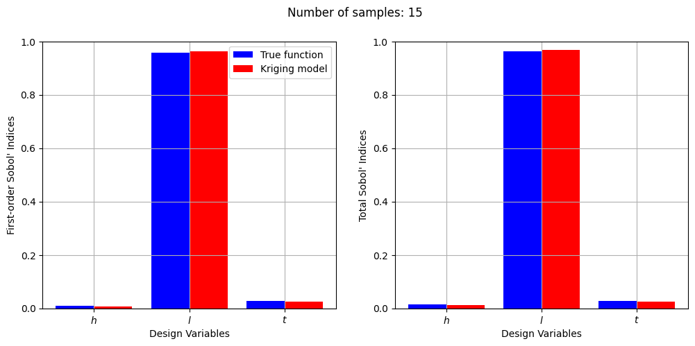
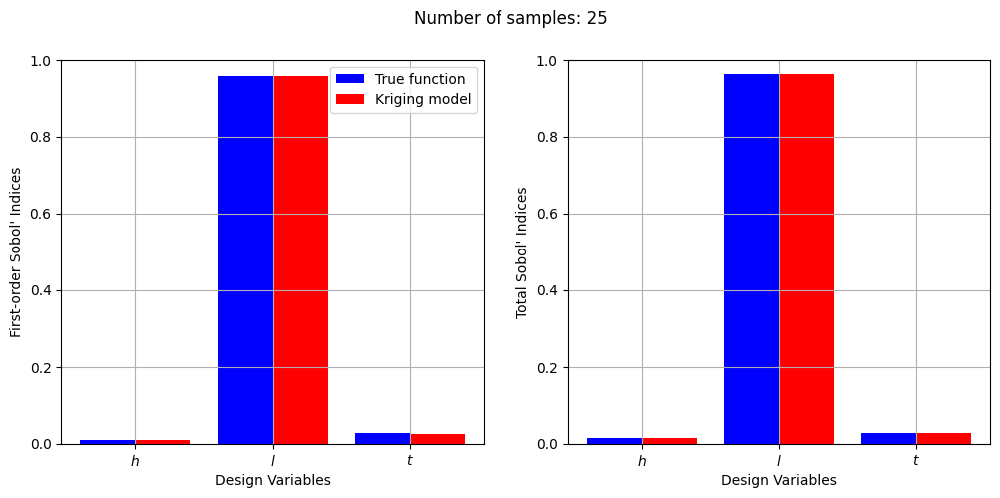
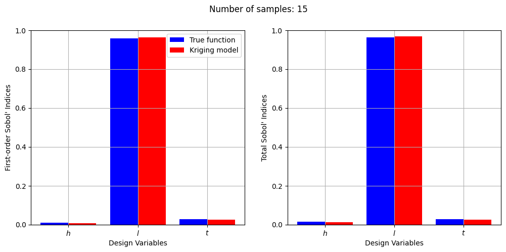
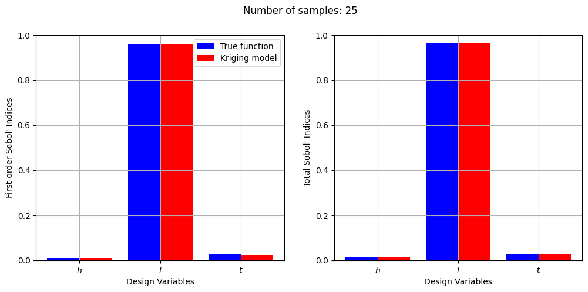

Global Sensitivity Analysis#
This section demonstrates global sensitivity analysis using the Sobol’ method. The Sobol’ method is implemented using SALib, a Python library built specifically for performing sensitivity analysis. The method is demonstrated on the Water Flow and Welded Beam Function that are available in the benchmarking problems section of smt.
1. Water Flow Function#
The water flow function can be represented as: $\( \begin{gathered} f(\textbf{x}) = \frac{2\pi T_u (H_u - H_l)}{\textrm{ln}(\frac{r}{r_w})[1 + \frac{2LT_u}{\textrm{ln}(\frac{r}{r_w})r_w^2K_w}+\frac{T_u}{T_l}]} \\ \\ \end{gathered} \)$
The function has 8 variables. The blocks of code below use the Water Flow Function defined in smt to define a function for the Sobol’ method.
# Imports
import numpy as np
import matplotlib.pyplot as plt
from smt.sampling_methods import LHS
from smt.surrogate_models import KRG
from smt.problems import WaterFlow, WeldedBeam
from SALib.sample import sobol, latin
from SALib.analyze import sobol as SOBOL
# Defining water flow function problem
ndim = 8
waterflow = WaterFlow(ndim=ndim)
The block of code below defines the bounds of the 8 variables of the function and the sensitivity analysis problem.
# Defining sensitivity analysis problem
xlimits = np.array([[0.05, 0.15], [100.0, 50000.0], [63070, 115600], [990, 1110], [63.10, 116], [700, 820], [1120, 1680], [9855, 12045]])
problem = {
'num_vars': ndim,
'names': ['$r_w$', '$r$', '$T_u$', '$H_u$', '$T_l$', '$H_l$', '$L$', '$K_w$'],
'bounds': xlimits
}
The next block of code uses Sobol sequences to generate samples for Monte Carlo simulations done to approximate the relevant integrals for applying the Sobol’ method.
param_values = sobol.sample(problem, 1024)
Y = waterflow(param_values)
Y = Y.reshape(-1)
Now, we will use the analyze method to calculate the Sobol’ indices.
Si = SOBOL.analyze(problem, Y)
print("First-order indices:", Si['S1'])
print("\nTotal indices:", Si['ST'])
First-order indices: [ 8.25333228e-01 -1.40467348e-05 -5.41807490e-08 4.17527606e-02
-3.82028524e-05 4.04063932e-02 3.96859536e-02 9.63442556e-03]
Total indices: [8.60305971e-01 2.15270151e-06 1.04877522e-11 5.29330610e-02
1.06885098e-05 5.40930801e-02 5.18931057e-02 1.24399649e-02]
From the values of the Sobol’ indices, it is clear that the water flow function is highly sensitive to the \(r_w\) variable. Next, we will plot graphs to visualize the Sobol’ indices for the different variables of the water flow function.
# Plotting first order indices
vars = problem['names']
s1_values = Si['S1']
fig, ax = plt.subplots(1,2, figsize = (9,5))
ax[0].bar(vars, s1_values, color ='blue', width = 0.8)
ax[0].set_xlabel("Design Variabls")
ax[0].set_ylabel("First-order Sobol' Indices")
ax[0].grid()
ax[0].set_ylim([0.0, 1.0])
# Plotting total indices
st_values = Si['ST']
ax[1].bar(vars, st_values, color ='blue', width = 0.8)
ax[1].set_xlabel("Design Variabls")
ax[1].set_ylabel("Total Sobol' Indices")
ax[1].grid()
ax[1].set_ylim([0.0, 1.0])
plt.tight_layout()
Using surrogates instead of the true function. Creating a kriging model of the water flow function and varying the number of samples and plotting sobol indices for each number of samples.
samples = [5,10,15,20,25,30,35,40]
for size in samples:
# Generate training samples using LHS
sampling = LHS(xlimits=xlimits, criterion="ese")
xtrain = sampling(size)
ytrain = waterflow(xtrain)
# Create kriging model
corr = 'squar_exp'
sm = KRG(theta0=[1e-2], corr=corr, theta_bounds=[1e-6, 1e2], print_global=False)
sm.set_training_values(xtrain, ytrain)
sm.train()
# Generate values for Sobol sequence samples using the surrogate
surrogate_Y = sm.predict_values(param_values)
surrogate_Y = surrogate_Y.reshape(-1)
Si_surrogate = SOBOL.analyze(problem, surrogate_Y)
print("\nNumber of samples:", size)
print("First-order indices:", Si_surrogate['S1'])
print("\nTotal indices:", Si_surrogate['ST'])
# Plotting first order indices
vars = problem['names']
s1_surrogate = Si_surrogate['S1']
r = np.arange(len(s1_surrogate))
width = 0.4
fig, ax = plt.subplots(1, 2, figsize=(12,5))
ax[0].bar(r, s1_values, color ='blue', width = width, label = "True function")
ax[0].bar(r+width, s1_surrogate, color ='red', width = width, label = "Kriging model")
ax[0].set_xlabel("Design Variables")
ax[0].set_ylabel("First-order Sobol' Indices")
ax[0].set_xticks(r + width/2,vars)
ax[0].legend()
ax[0].grid()
ax[0].set_ylim([0.0, 1.0])
# Plotting total indices
st_surrogate = Si_surrogate['ST']
ax[1].bar(r, st_values, color ='blue', width = width, label = "True function")
ax[1].bar(r+width, st_surrogate, color ='red', width = width, label = "Kriging model")
ax[1].set_xlabel("Design Variables")
ax[1].set_ylabel("Total Sobol' Indices")
ax[1].set_xticks(r + width/2,vars)
ax[1].grid()
ax[1].set_ylim([0.0, 1.0])
fig.suptitle("Number of samples: {}".format(size))
Number of samples: 5
First-order indices: [ 1.81550459e-03 4.39211294e-05 8.30422306e-07 -3.17867366e-06
9.65594184e-01 -3.46628656e-07 3.44819042e-03 1.62302675e-02]
Total indices: [1.97536226e-03 1.63983854e-05 1.27487526e-08 1.64042224e-07
9.76725223e-01 3.53794190e-07 1.26318196e-02 2.13675708e-02]
Number of samples: 10
First-order indices: [ 9.53259164e-01 4.36818582e-02 -1.13201166e-05 1.26863437e-06
1.73815968e-05 2.57752024e-04 -5.73314232e-08 9.26558461e-05]
Total indices: [9.67628938e-01 4.98751453e-02 7.91524017e-06 9.19254149e-08
8.14613264e-06 2.65464157e-04 7.92778534e-10 5.93873302e-05]
Number of samples: 15
First-order indices: [8.13214104e-01 9.44583203e-06 1.11837479e-06 2.98684083e-02
2.60913540e-03 6.48777491e-02 4.47945525e-02 4.60912404e-03]
Total indices: [8.47275331e-01 1.73887535e-07 1.47819833e-05 3.67454953e-02
3.68988448e-03 8.37655072e-02 5.09331514e-02 4.74861945e-03]
Number of samples: 20
First-order indices: [8.27130572e-01 9.66410768e-06 1.46359545e-04 4.25647590e-02
1.42522792e-04 4.44258735e-02 3.33385567e-02 1.23004857e-02]
Total indices: [8.60695401e-01 1.87551330e-05 1.56592668e-04 5.23608807e-02
1.54739548e-04 5.73956810e-02 4.29286078e-02 1.51818365e-02]
Number of samples: 25
First-order indices: [8.34729413e-01 4.17878046e-04 7.45311217e-06 3.18357647e-02
1.85999314e-05 4.19524981e-02 3.90915811e-02 1.00726361e-02]
Total indices: [8.69612903e-01 3.32441899e-04 1.11853255e-05 4.27453104e-02
6.36883226e-05 5.11147722e-02 5.15012046e-02 1.42992882e-02]
Number of samples: 30
First-order indices: [ 8.23718291e-01 1.30241060e-05 -2.38688653e-05 4.44514897e-02
1.16188556e-05 4.12882330e-02 3.68796447e-02 8.51639907e-03]
Total indices: [8.59578350e-01 5.09974861e-05 6.65255822e-06 5.98131856e-02
1.89100659e-05 5.50965579e-02 4.83329423e-02 1.02123213e-02]
Number of samples: 35
First-order indices: [ 8.25086225e-01 4.85348007e-05 -2.40929133e-05 3.89934312e-02
2.25394560e-06 4.23925614e-02 3.92240990e-02 7.91543061e-03]
Total indices: [8.62488551e-01 1.54780978e-05 8.18424494e-06 5.09842511e-02
7.87802793e-05 5.87410940e-02 5.30397728e-02 9.03138378e-03]
Number of samples: 40
First-order indices: [ 8.31168478e-01 -9.49786912e-05 -1.57254999e-04 3.88278197e-02
8.10514517e-06 4.11047736e-02 4.11712058e-02 9.72179367e-03]
Total indices: [8.63197997e-01 7.02071784e-05 9.45577034e-05 4.92055904e-02
1.16105038e-06 5.24178733e-02 5.23828480e-02 1.13506659e-02]
2. Welded Beam Function#
The welded beam function can be represented as: $\( \begin{gathered} f(\textbf{x}) = \\ \\ \end{gathered} \)$
The function has 3 variables. The blocks of code below use the Welded Beam Function defined in smt to define a function for the Sobol’ method.
ndim = 3
weldedbeam = WeldedBeam(ndim=ndim)
Now, we will apply the same procedure as the water flow function to calculate the Sobol’ indices for the welded beam function.
# Defining sensitivity analysis problem
xlimits = np.array([[0.125, 1.0], [5.0, 10.0], [5.0, 10.0]])
problem = {
'num_vars': ndim,
'names': ['$h$', '$l$', '$t$'],
'bounds': xlimits
}
param_values = sobol.sample(problem, 1024)
Y = weldedbeam(param_values)
Y = Y.reshape(-1)
Si = SOBOL.analyze(problem, Y)
print("First-order indices:", Si['S1'])
print("\nTotal indices:", Si['ST'])
First-order indices: [0.00997659 0.95683814 0.02691913]
Total indices: [0.0149239 0.96384449 0.02887234]
# Plotting first order indices
vars = problem['names']
s1_values = Si['S1']
fig, ax = plt.subplots(1, 2, figsize=(9,5))
ax[0].bar(vars, s1_values, color ='blue', width = 0.4)
ax[0].set_xlabel("Design Variabls")
ax[0].set_ylabel("Sobol' Indices")
ax[0].set_title("First-order indices for Welded Beam Function")
ax[0].grid()
ax[0].set_ylim([0.0, 1.0])
# Plotting total indices
st_values = Si['ST']
ax[1].bar(vars, st_values, color ='blue', width = 0.4)
ax[1].set_xlabel("Design Variabls")
ax[1].set_ylabel("Sobol' Indices")
ax[1].set_title("Total indices for Welded Beam Function")
ax[1].grid()
ax[1].set_ylim([0.0, 1.0])
plt.tight_layout()
samples = [5,10,15,20,25,30]
for size in samples:
# Generate training samples using LHS
sampling = LHS(xlimits=xlimits, criterion="ese")
xtrain = sampling(size)
ytrain = weldedbeam(xtrain)
# Create kriging model
corr = 'squar_exp'
sm = KRG(theta0=[1e-2], corr=corr, theta_bounds=[1e-6, 1e2], print_global=False)
sm.set_training_values(xtrain, ytrain)
sm.train()
# Generate values for Sobol sequence samples using the surrogate
surrogate_Y = sm.predict_values(param_values)
surrogate_Y = surrogate_Y.reshape(-1)
Si_surrogate = SOBOL.analyze(problem, surrogate_Y)
print("\nNumber of samples:", size)
print("First-order indices:", Si_surrogate['S1'])
print("\nTotal indices:", Si_surrogate['ST'])
# Plotting first order indices
vars = problem['names']
s1_surrogate = Si_surrogate['S1']
r = np.arange(len(s1_surrogate))
width = 0.4
fig, ax = plt.subplots(1, 2, figsize=(12,5))
ax[0].bar(r, s1_values, color ='blue', width = width, label = "True function")
ax[0].bar(r+width, s1_surrogate, color ='red', width = width, label = "Kriging model")
ax[0].set_xlabel("Design Variables")
ax[0].set_ylabel("First-order Sobol' Indices")
ax[0].set_xticks(r + width/2,vars)
ax[0].legend()
ax[0].grid()
ax[0].set_ylim([0.0, 1.0])
# Plotting total indices
st_surrogate = Si_surrogate['ST']
ax[1].bar(r, st_values, color ='blue', width = width, label = "True function")
ax[1].bar(r+width, st_surrogate, color ='red', width = width, label = "Kriging model")
ax[1].set_xlabel("Design Variables")
ax[1].set_ylabel("Total Sobol' Indices")
ax[1].set_xticks(r + width/2,vars)
ax[1].grid()
ax[1].set_ylim([0.0, 1.0])
fig.suptitle("Number of samples: {}".format(size))
Number of samples: 5
First-order indices: [-5.65514831e-08 9.79996156e-01 1.92183567e-02]
Total indices: [2.78677642e-09 9.80722096e-01 1.98289182e-02]
Number of samples: 10
First-order indices: [0.0045175 0.96982767 0.02354606]
Total indices: [0.00484272 0.97201986 0.02553376]
Number of samples: 15
First-order indices: [0.00816947 0.96390814 0.02409232]
Total indices: [0.01126248 0.96796856 0.0250729 ]
Number of samples: 20
First-order indices: [0.00963104 0.95919081 0.02481805]
Total indices: [0.01514408 0.96577308 0.02650192]
Number of samples: 25
First-order indices: [0.01059899 0.95712009 0.02626423]
Total indices: [0.01482453 0.96397143 0.02834464]
Number of samples: 30
First-order indices: [0.00972515 0.95724169 0.02692765]
Total indices: [0.01426719 0.96354829 0.02902243]
 


